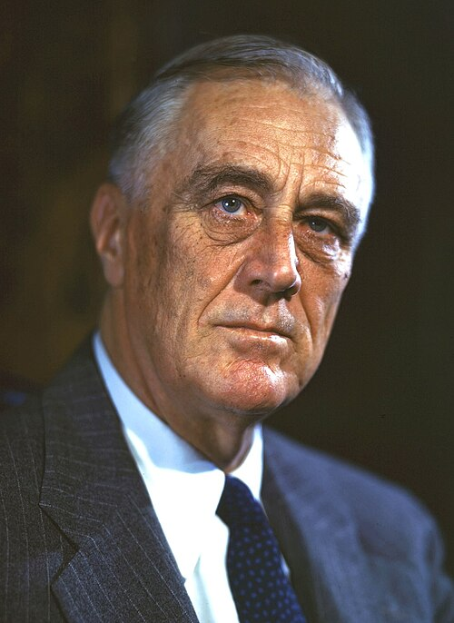
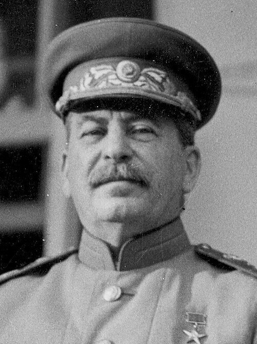

Potencias del Eje
Los líderes de las principales potencias del Eje.

Alemania
Adolf Hitler
Führer y canciller del Tercer Reich.

Italia
Benito Mussolini
Duce de la Italia fascista.

Japón
Hideki Tōjō
Primer ministro del Imperio del Japón.
Aliados
Los líderes de la Gran Alianza y de los gobiernos en el exilio.

Reino Unido
Winston Churchill
Primer ministro británico.

Estados Unidos
Franklin D. Roosevelt
Presidente de Estados Unidos.

URSS
Iósif Stalin
Líder de la Unión Soviética.

Francia Libre
Charles de Gaulle
Líder de la Francia Libre.

Polonia
Władysław Sikorski
Jefe del gobierno polaco en el exilio.
Otros regímenes
Líderes de regímenes colaboracionistas, alineados o no beligerantes.